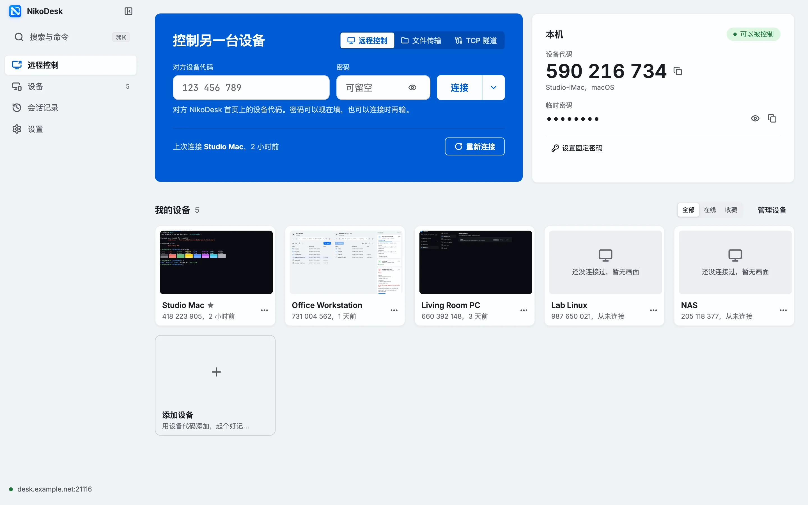
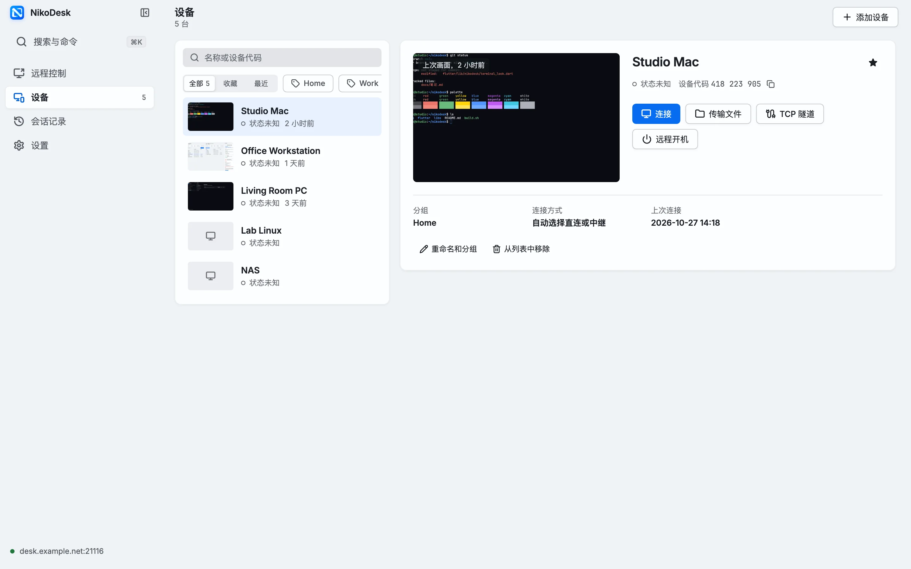
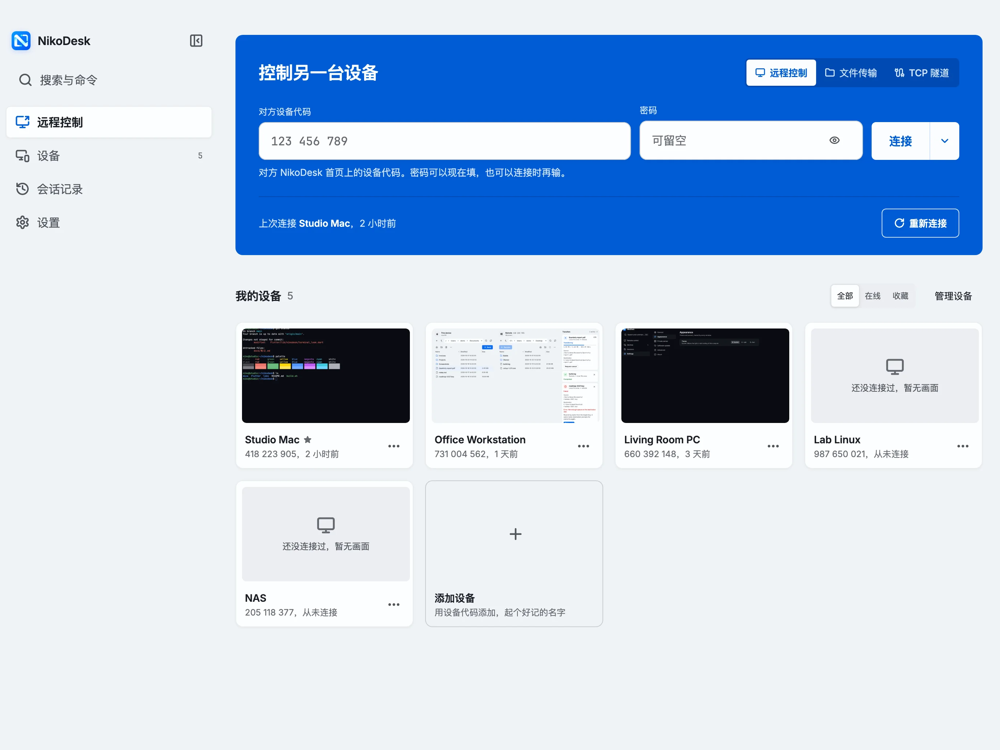
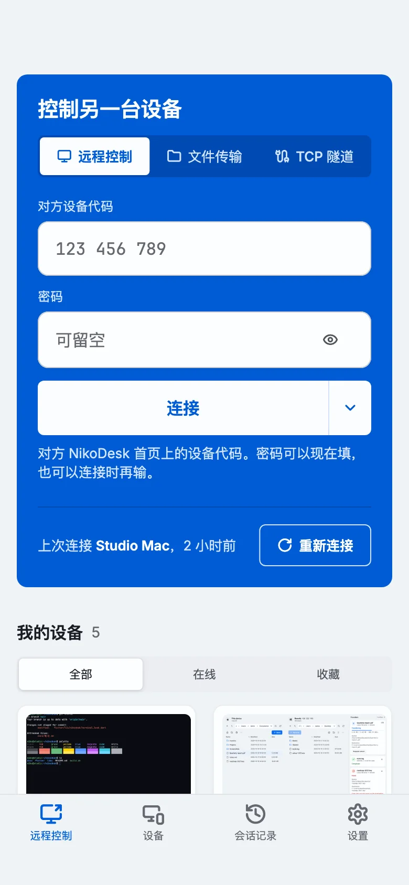
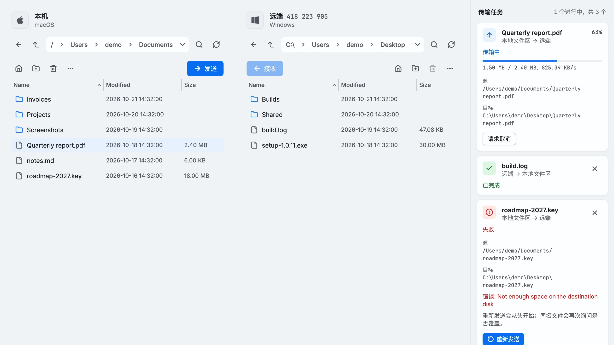
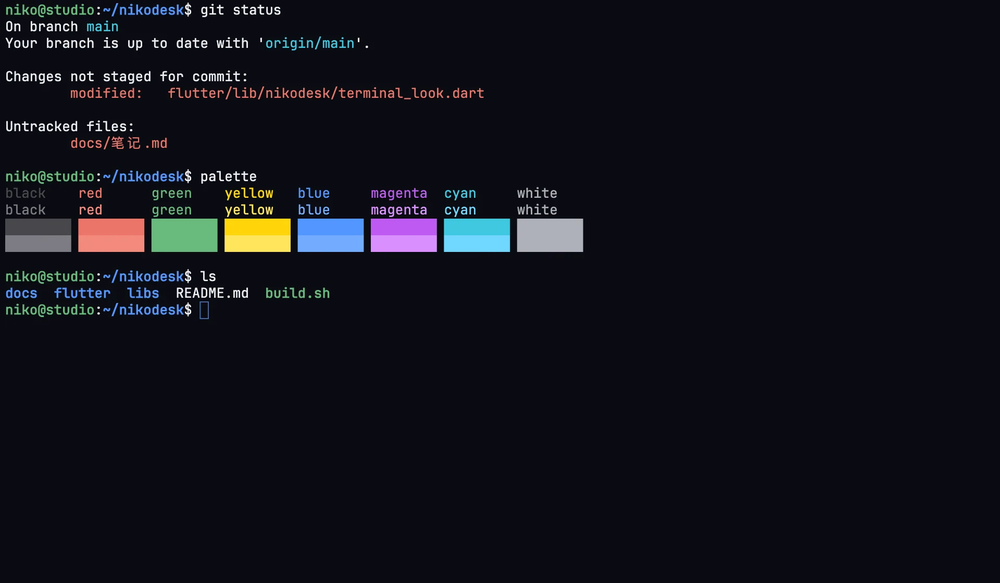
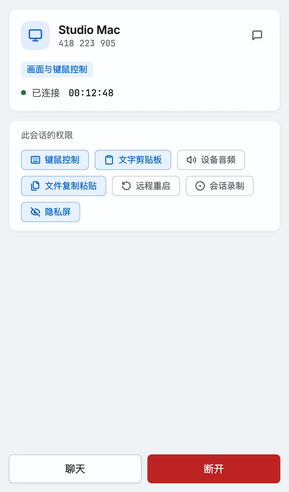
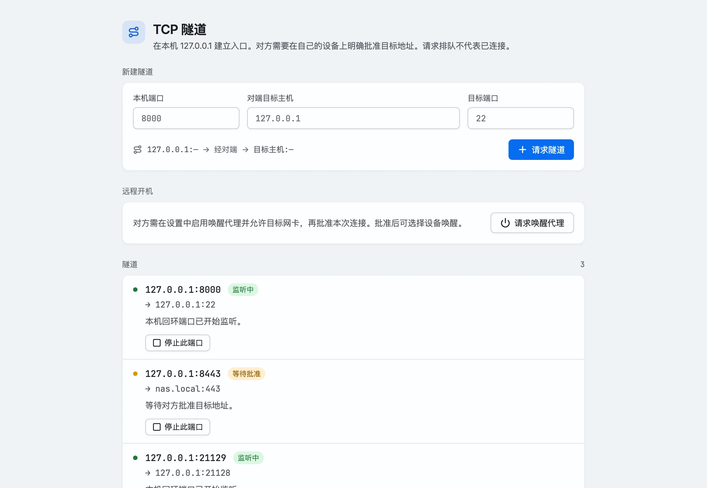
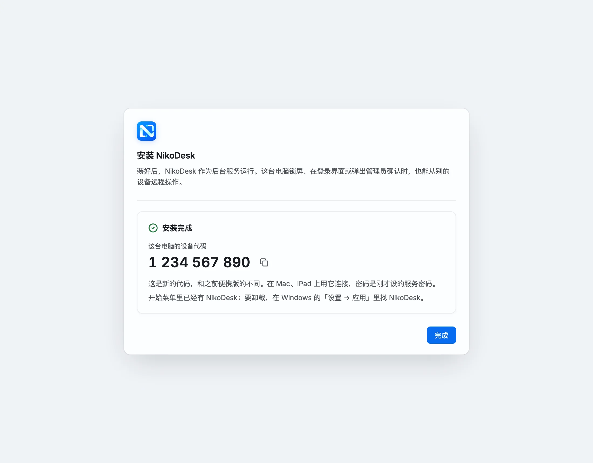

远程桌面，只走你自己的服务器
Mac、Windows、iPad 和安卓互相连接。没有账号，画面和文件不经过任何第三方。
免费开源，AGPL-3.0。需要一台自己的服务器。

每台设备上都是同一个 NikoDesk
对方的设备代码填进蓝色面板；常用的设备带着上次的画面排在下面。



连上以后，要用的都在手边
传文件、开终端、转发端口；对方电脑上一直看得到是谁连着。

文件传输
两边并排；遇到同名文件先问你。
终端
直接在对方电脑上开一个命令行。
被控端的连接窗口
谁连着、有哪些权限，随时可以断开。
TCP 隧道
访问对方局域网里的端口，比如 NAS 的管理页。Windows 锁屏了也能连
3.0 起 Windows 只发安装版。装好后 NikoDesk 作为后台服务运行。
- 锁屏、登录界面和管理员确认都能远程操作
- 开机自动运行
- 开始菜单有入口，在「设置 → 应用」里卸载
安装版有新的设备代码和密码，在 Mac 或 iPad 上改用它们。

数据只在你的机器上
- 注册和中继
- hbbs 和 hbbr 跑在你的服务器上。NikoDesk 不连接任何公共服务器。
- 设备列表
- 存在本机，不需要账号。
- 密码
- 默认不保存；要保存，由你每次勾选。
- 设备的上次画面
- 只存在这台设备上，关掉即删除。
三步用起来
-
在服务器上启动 hbbs 和 hbbr
一台有公网地址的机器即可，也可以用已有的 RustDesk Server OSS。docker run -d --name hbbs --net=host \ rustdesk/rustdesk-server-oss hbbs -r relay.example.com docker run -d --name hbbr --net=host \ rustdesk/rustdesk-server-oss hbbr # 两端都要填的公钥 cat ./id_ed25519.pub -
两端填服务器地址和公钥
在 NikoDesk 的设置里填一次。 -
输入设备代码，连接
都在对方的首页上。